🚨 Mission 07 : Extraction de contenu de CV avec des invites multimodales¶
Warning
This course is still in development. That means that the quality is not up to par yet or that it doesn't work as intended.
🕵️♂️ NOM DE CODE : DOCUMENT RESUME RECON¶
⏱️ Fenêtre temporelle de l'opération :
~45 minutes
🎯 Résumé de la mission¶
Bienvenue, Opératif. Vos missions précédentes vous ont doté de compétences puissantes en orchestration d'agents, mais il est temps de débloquer une capacité révolutionnaire : l'analyse multimodale de documents.
Votre mission, si vous l'acceptez, est Document Resume Recon - extraire des données structurées de tout document avec précision. Bien que vos agents puissent traiter du texte facilement, le monde réel exige de gérer quotidiennement des PDF, des images et des documents complexes. Les CV s'accumulent, les factures doivent être traitées, et les formulaires nécessitent une numérisation instantanée.
Cette mission vous transformera d'un créateur d'agents textuels en un expert multimodal. Vous apprendrez à configurer une IA qui lit et comprend les documents comme un analyste humain - mais avec la vitesse et la cohérence de l'IA. À la fin de la mission, vous aurez construit un système complet d'extraction de CV intégré à votre flux de recrutement.
Les techniques que vous apprendrez ici seront essentielles pour les opérations avancées de mise en correspondance des données lors de votre prochaine mission.
🔎 Objectifs¶
Dans cette mission, vous apprendrez :
- Ce que sont les invites multimodales et quand utiliser différents modèles d'IA
- Comment configurer des invites avec des entrées d'image et de document
- Comment formater les sorties d'invites en JSON pour l'extraction de données structurées
- Les meilleures pratiques pour l'ingénierie des invites avec l'analyse de documents
- Comment intégrer des invites multimodales avec les flux d'agents
🧠 Comprendre les invites multimodales¶
Qu'est-ce qui rend une invite "multimodale" ?¶
Les invites traditionnelles fonctionnent uniquement avec du texte. Mais les invites multimodales peuvent traiter plusieurs types de contenu :
- Texte : Instructions écrites et contenu
- Images : Photos, captures d'écran, graphiques et diagrammes (.PNG, .JPG, .JPEG)
- Documents : Factures, CV, formulaires (.PDF)
Cette capacité ouvre des scénarios puissants comme l'analyse de CV, le traitement de factures ou l'extraction de données de formulaires.
Pourquoi les multimodales sont importantes pour vos flux de travail¶
Chaque jour, votre organisation fait face à ces défis de traitement de documents :
- Tri des CV : Lire manuellement des centaines de CV prend beaucoup de temps
- Traitement des factures : Extraire les détails des fournisseurs, les montants et les dates à partir de formats de documents variés
- Analyse de formulaires : Convertir des formulaires papier en données numériques
Les invites multimodales éliminent ces goulots d'étranglement en combinant la compréhension du langage par l'IA avec des capacités d'analyse visuelle. Cela donne à votre IA la capacité de traiter les documents aussi efficacement que le texte.
Scénarios courants en entreprise¶
Voici quelques exemples d'application des invites multimodales :
| Scénario | Tâche | Champs de sortie exemple |
|---|---|---|
| Tri des CV | Extraire le nom du candidat, l'email, le téléphone, le poste actuel, les années d'expérience et les compétences clés. | Nom du candidat, Adresse email, Numéro de téléphone, Poste actuel, Années d'expérience, Compétences clés |
| Traitement des factures | Extraire les informations du fournisseur, la date de la facture, le montant total et les articles de cette facture. | Nom du fournisseur, Date de la facture, Montant total, Articles de la facture |
| Analyse de formulaires | Analyser ce formulaire de candidature et extraire tous les champs remplis. | Nom du champ (ex. : Nom du candidat), Valeur saisie (ex. : John Doe), ... |
| Vérification de documents d'identité | Extraire le nom, le numéro d'identification, la date d'expiration et l'adresse de ce document d'identité. Vérifier que tout le texte est clairement lisible et signaler les sections peu claires. | Nom complet, Numéro d'identification, Date d'expiration, Adresse, Signalement des sections peu claires |
⚙️ Sélection de modèles dans AI Builder¶
AI Builder propose différents modèles optimisés pour des tâches spécifiques. Comprendre quel modèle utiliser est crucial pour réussir.
Exact à partir de septembre 2025
Les modèles AI Builder sont mis à jour régulièrement, alors consultez la dernière documentation des paramètres de modèles AI Builder pour connaître la disponibilité actuelle des modèles.
Comparaison des modèles¶
Tous les modèles suivants prennent en charge la vision et le traitement des documents.
| Modèle | 💰Coût | ⚡Vitesse | ✅Idéal pour |
|---|---|---|---|
| GPT-4.1 mini | Basique (le plus économique) | Rapide | Traitement standard des documents, résumés, projets économiques |
| GPT-4.1 | Standard | Modéré | Documents complexes, création de contenu avancée, besoins de haute précision |
| o3 | Premium | Lent (raisonnement prioritaire) | Analyse de données, réflexion critique, résolution de problèmes sophistiquée |
| GPT-5 chat | Standard | Amélioré | Compréhension des documents la plus récente, précision de réponse maximale |
| GPT-5 reasoning | Premium | Lent (analyse complexe) | Analyse la plus sophistiquée, planification, raisonnement avancé |
Explication des paramètres de température¶
La température contrôle à quel point les réponses de l'IA sont créatives ou prévisibles :
- Température 0 : Résultats les plus prévisibles et cohérents (idéal pour l'extraction de données)
- Température 0.5 : Équilibre entre créativité et cohérence
- Température 1 : Créativité maximale (idéal pour la génération de contenu)
Pour l'analyse de documents, utilisez température 0 pour garantir une extraction de données cohérente.
📊 Formats de sortie : Texte vs JSON¶
Choisir le bon format de sortie est essentiel pour le traitement en aval.
Quand utiliser une sortie texte¶
La sortie texte fonctionne bien pour :
- Résumés lisibles par l'humain
- Classifications simples
- Contenu qui n'a pas besoin de traitement structuré
Quand utiliser une sortie JSON¶
La sortie JSON est essentielle pour :
- Extraction de données structurées
- Intégration avec des bases de données ou systèmes
- Traitement des flux Power Automate
- Cartographie cohérente des champs
Meilleures pratiques pour JSON¶
- Définir des noms de champs clairs : Utilisez des noms descriptifs et cohérents
- Fournir des exemples : Incluez des exemples de sortie et de valeurs pour chaque champ
- Spécifier les types de données : Incluez des exemples pour les dates, les nombres et le texte
- Gérer les données manquantes : Prévoir des valeurs nulles ou vides
- Valider la structure : Tester avec différents types de documents
Considérations sur la qualité des documents¶
- Résolution : Assurez-vous que les images sont claires et lisibles
- Orientation : Faites pivoter les documents dans la bonne orientation avant le traitement
- Compatibilité des formats : Testez avec vos types de documents spécifiques (PDF, JPG, PNG)
- Limites de taille : Soyez conscient des restrictions de taille de fichier dans votre environnement
Optimisation des performances¶
- Choisir les modèles appropriés : Mettez à niveau les modèles uniquement si nécessaire
- Optimiser les invites : Souvent, des instructions plus courtes et plus claires donnent de meilleurs résultats
- Gestion des erreurs : Prévoir des documents qui ne peuvent pas être traités
- Surveiller les coûts : Les différents modèles consomment des quantités différentes de crédits AI Builder
🧪 Laboratoire 7 : Construire un système d'extraction de CV¶
Il est temps de mettre en pratique vos connaissances en multimodalité. Vous allez construire un système complet d'extraction de CV qui analyse les documents des candidats et les transforme en données structurées pour votre flux de recrutement.
Prérequis pour compléter cette mission¶
-
Vous devez soit :
- Avoir terminé la Mission 06 et avoir votre système de recrutement multi-agents prêt, OU
- Importer la solution de démarrage de la Mission 07 si vous commencez à zéro ou avez besoin de rattraper votre retard. Télécharger la solution de démarrage de la Mission 07
-
Documents de CV d'exemple disponibles sur Test Resumes
Importation de solution et données d'exemple
Si vous utilisez la solution de démarrage, consultez Mission 01 pour des instructions détaillées sur l'importation des solutions et des données d'exemple dans votre environnement.
7.1 Créer une invite multimodale¶
Votre premier objectif : créer une invite capable d'analyser des documents de CV et d'extraire des données structurées.
-
Connectez-vous à Copilot Studio et sélectionnez Outils dans la navigation à gauche.
-
Sélectionnez + Nouvel outil, puis sélectionnez Invite.
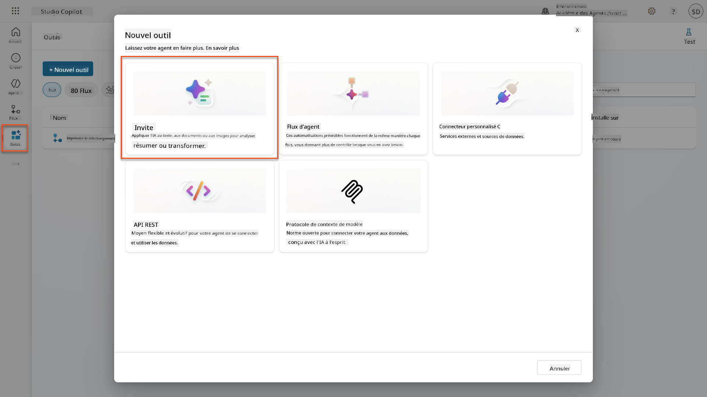
-
Renommez l'invite du nom par défaut basé sur l'horodatage (ex. : Invite personnalisée 09/04/2025, 16:59:11) en
Résumé du CV. -
Dans le champ Instructions, ajoutez cette invite :
You are tasked with extracting key candidate information from a resume and cover letter to facilitate matching with open job roles and creating a summary for application review. Instructions: 1. Extract Candidate Details: - Identify and extract the candidate’s full name. - Extract contact information, specifically the email address. 2. Create Candidate Summary: - Summarize the candidate’s profile as multiline text (max 2000 characters) with the following sections: - Candidate name - Role(s) applied for if present - Contact and location - One-paragraph summary - Experience snapshot (last 2–3 roles with outcomes) - Key projects (1–3 with metrics) - Education and certifications - Top skills (Top 10) - Availability and work authorization Guidelines: - Extract information only from the provided resume and cover letter documents. - Ensure accuracy in identifying all details such as contact details and skills. - The summary should be concise but informative, suitable for quick application review. Resume: /document CoverLetter: /textUtilisez l'assistance Copilot
Vous pouvez utiliser "Commencer avec Copilot" pour générer votre invite en langage naturel. Essayez de demander à Copilot de créer une invite pour résumer un CV !
-
Configurez les paramètres d'entrée :
Paramètre Type Nom Données d'exemple CV Image ou document CV Téléchargez un CV d'exemple depuis le dossier de données de test Lettre de motivation Texte LettreDeMotivation Voici un CV ! -
Sélectionnez Tester pour voir la sortie texte initiale de votre invite.
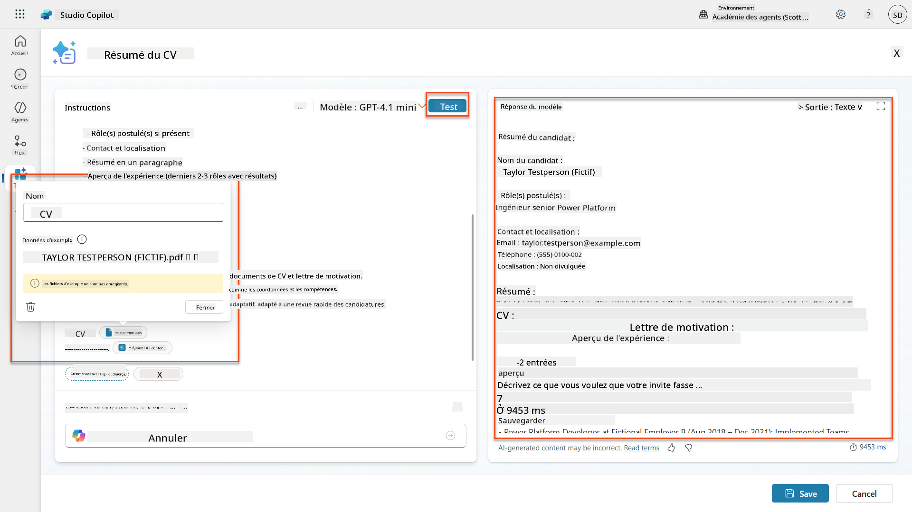
7.2 Configurer la sortie JSON¶
Vous allez maintenant convertir l'invite pour produire des données structurées au format JSON au lieu de texte brut.
-
Ajoutez cette spécification de format JSON à la fin des instructions de votre invite :
-
Changez le paramètre Sortie de "Texte" à JSON.
-
Sélectionnez Tester à nouveau pour vérifier que la sortie est maintenant formatée en JSON.
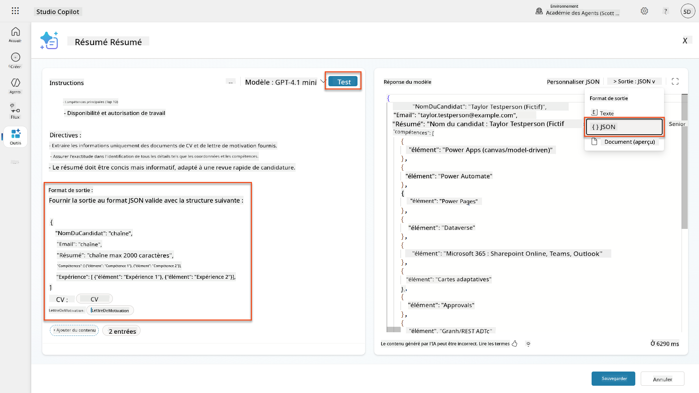
-
Optionnel : Expérimentez avec différents modèles d'IA pour voir comment les sorties varient, puis revenez au modèle par défaut.
-
Sélectionnez Enregistrer pour créer l'invite.
-
Dans la boîte de dialogue Configurer pour utilisation dans Agent, sélectionnez Annuler.
Pourquoi nous n'ajoutons pas cela comme un outil pour l'instant
Vous utiliserez cette invite dans un flux d'agent plutôt que directement comme un outil, ce qui vous donne plus de contrôle sur le flux de traitement des données.
7.3 Ajouter l'invite à un flux d'agent¶
Vous allez créer un flux d'agent qui utilise votre invite pour traiter les CV stockés dans Dataverse.
Expressions de flux d'agent
Il est très important de suivre les instructions pour nommer vos nœuds et entrer les expressions exactement, car les expressions se réfèrent aux nœuds précédents en utilisant leur nom ! Consultez la mission Flux d'agent dans Recrutement pour un rappel rapide !
-
Accédez à votre Agent de recrutement dans Copilot Studio
-
Sélectionnez l'onglet Agents, puis sélectionnez le sous-agent Agent de réception des candidatures
-
Dans le panneau Outils, sélectionnez + Ajouter → + Nouvel outil → Flux d'agent
-
Sélectionnez le nœud Lorsque un agent appelle le flux, utilisez + Ajouter une entrée pour ajouter le paramètre suivant :
Type Nom Description Texte NumeroCV Assurez-vous d'utiliser [NumeroCV]. Cela doit toujours commencer par la lettre R -
Sélectionnez l'icône + Insérer une action sous le premier nœud, recherchez Dataverse, sélectionnez Voir plus, puis localisez l'action Lister les lignes
-
Sélectionnez les trois points (...) sur le nœud Lister les lignes, et sélectionnez Renommer en
Obtenir l'enregistrement du CV, puis définissez les paramètres suivants :Propriété Comment définir Valeur Nom de la table Sélectionner CV Filtrer les lignes Données dynamiques (icône éclair) ppa_resumenumber eq 'NumeroCV'Remplacez NumeroCV par Lorsque un agent appelle le flux → NumeroCVNombre de lignes Entrer 1 Optimisez ces requêtes !
Lorsque vous utilisez cette technique en production, vous devriez toujours limiter les colonnes sélectionnées uniquement à celles requises par le flux d'agent.
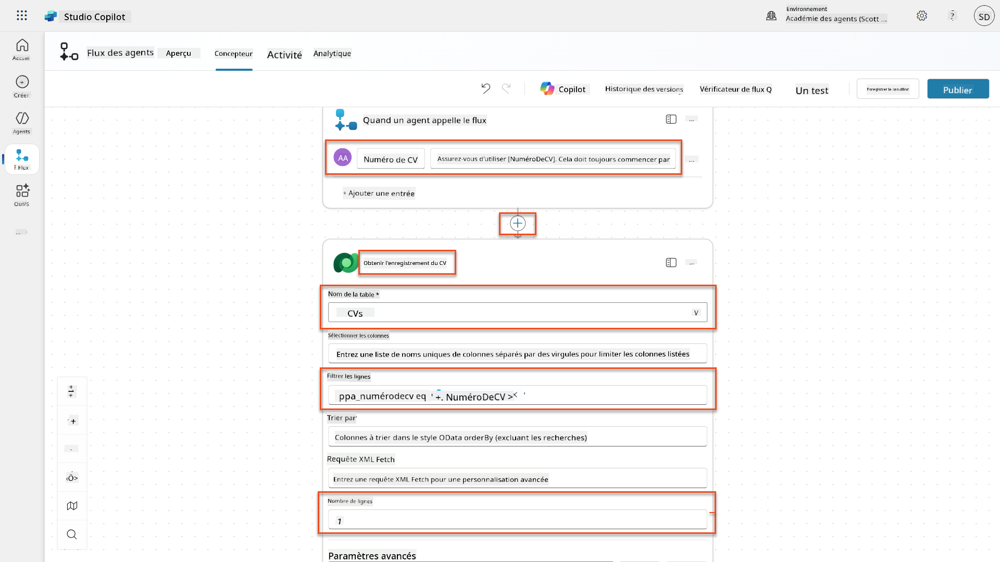
-
Sélectionnez l'icône + Insérer une action sous le nœud Obtenir l'enregistrement du CV, recherchez Dataverse, sélectionnez Voir plus, puis localisez l'action Télécharger un fichier ou une image.
Choisissez la bonne action !
Assurez-vous de ne pas sélectionner l'action qui se termine par "de l'environnement sélectionné"
-
Comme précédemment, renommez l'action
Télécharger le CV, puis définissez les paramètres suivants :Propriété Comment définir Valeur Nom de la table Sélectionner CV ID de la ligne Expression (icône fx) first(body('Obtenir_l_enregistrement_du_CV')?['value'])?['ppa_resumeid']Nom de la colonne Sélectionner PDF du CV 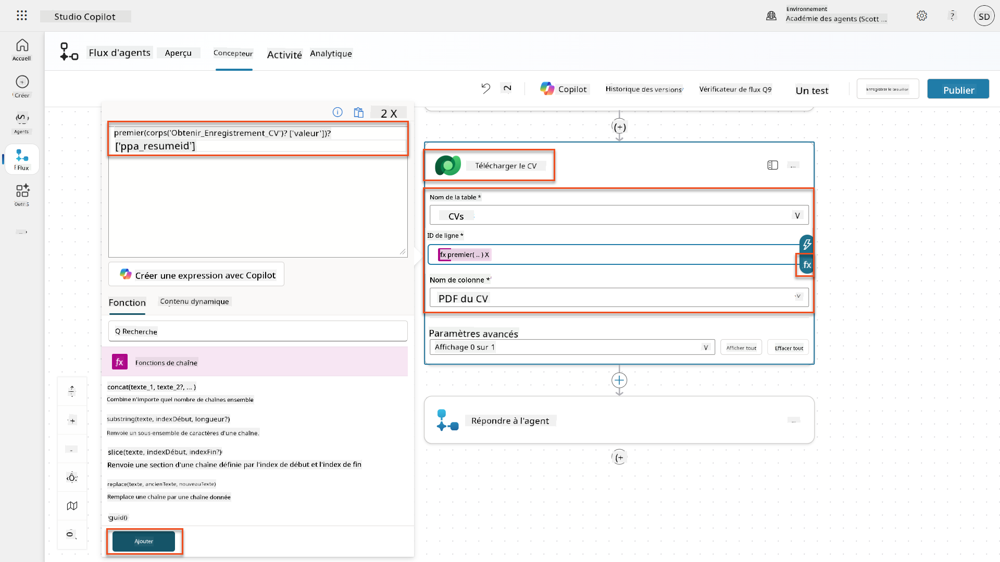
-
Maintenant, sélectionnez l'icône + Insérer une action sous Télécharger le CV, sous Capacités IA, sélectionnez Exécuter une invite,
-
Renommez l'action en
Résumé du CVet définissez les paramètres suivants :Propriété Comment définir Valeur Invite Sélectionner Résumer le CV Lettre de motivation Expression (icône fx) first(body('Get_Resume_Record')?['value'])?['ppa_coverletter']CV Données dynamiques (icône éclair) Télécharger le CV → Contenu du fichier ou de l'image
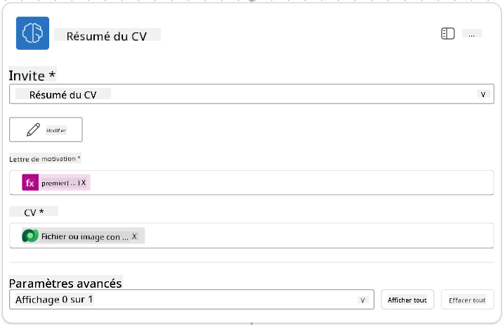
Paramètres de l'invite
Remarquez que les paramètres que vous remplissez sont les mêmes que ceux que vous avez configurés comme paramètres d'entrée lors de la création de votre invite.
7.4 Créer un enregistrement de candidat¶
Ensuite, vous devez utiliser les informations fournies par l'invite pour créer un nouvel enregistrement de candidat s'il n'existe pas déjà.
-
Sélectionnez l'icône + Insérer une action sous le nœud Résumer le CV, recherchez Dataverse, sélectionnez Voir plus, puis localisez l'action Lister les lignes.
-
Renommez le nœud en
Get Existing Candidate, puis configurez les paramètres suivants :Propriété Comment configurer Valeur Nom de la table Sélectionner Candidats Filtrer les lignes Données dynamiques (icône éclair) ppa_email eq 'Email'RemplacerEmailpar Résumer le CV → EmailNombre de lignes Entrer 1
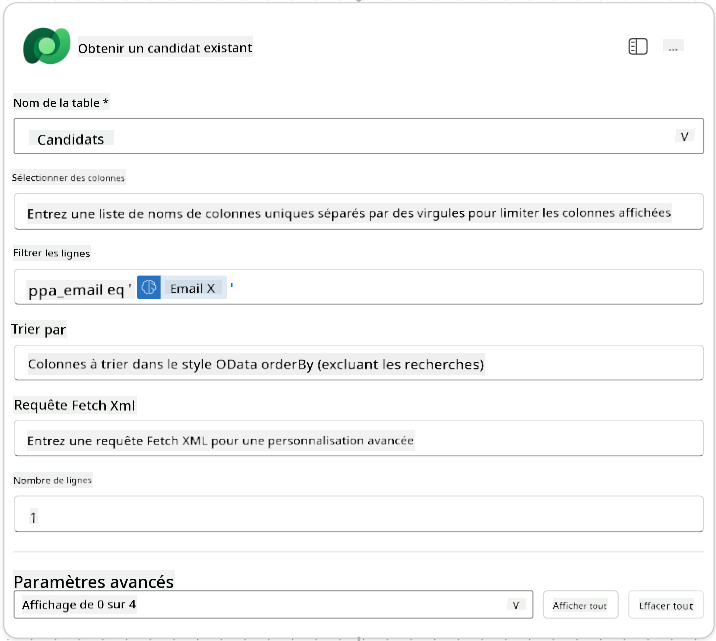
-
Sélectionnez l'icône + Insérer une action sous le nœud Obtenir un candidat existant, recherchez Contrôle, sélectionnez Voir plus, puis localisez l'action Condition.
-
Dans les propriétés de la condition, configurez la condition suivante :
Condition Opérateur Valeur Expression (icône fx) : length(outputs('Get_Existing_Candidate')?['body/value'])est égal à 0
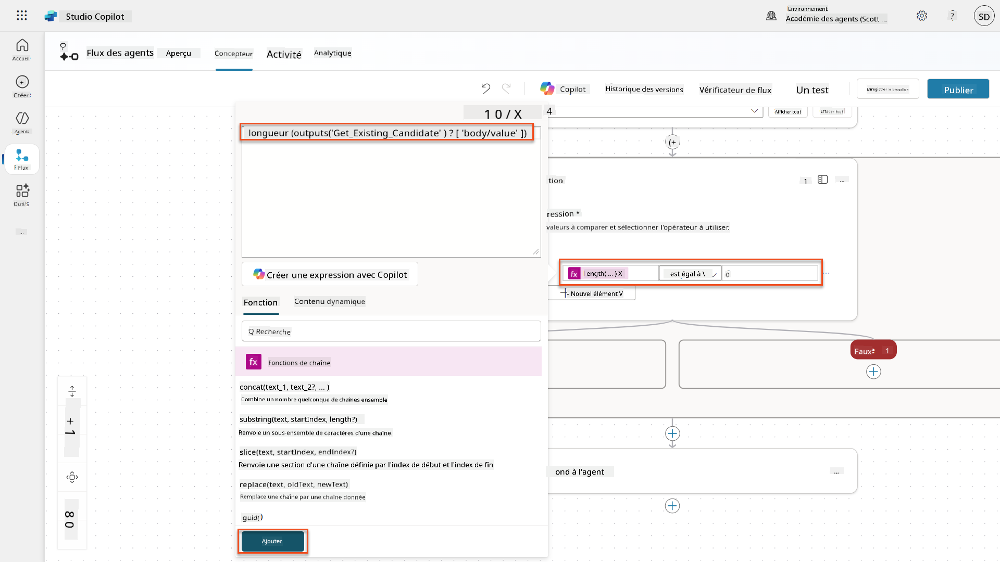
-
Sélectionnez l'icône + Insérer une action dans la branche True, recherchez Dataverse, sélectionnez Voir plus, puis localisez l'action Ajouter une nouvelle ligne.
-
Renommez le nœud en
Add a New Candidate, puis configurez les paramètres suivants :Propriété Comment configurer Valeur Nom de la table Sélectionner Candidats Nom du candidat Données dynamiques (icône éclair) Résumer le CV → CandidateNameEmail Données dynamiques (icône éclair) Résumer le CV → Email
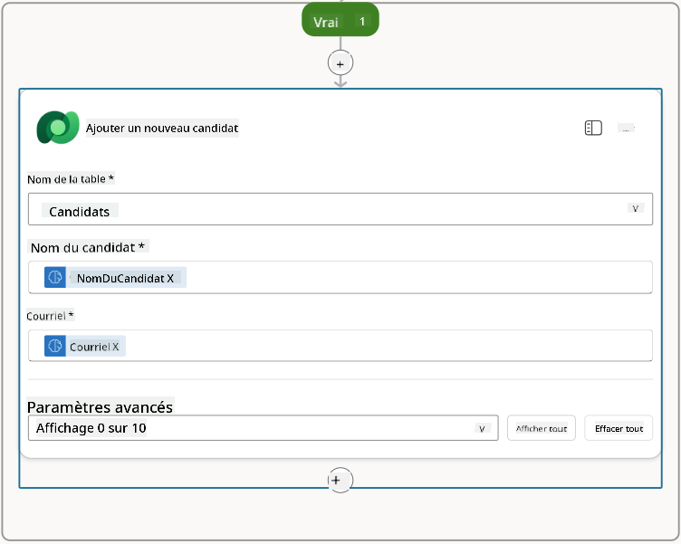
7.5 Mettre à jour le CV et configurer les sorties du flux¶
Complétez le flux en mettant à jour l'enregistrement du CV et en configurant les données à retourner à votre agent.
-
Sélectionnez l'icône + Insérer une action sous la condition, recherchez Dataverse, sélectionnez Voir plus, puis localisez l'action Mettre à jour une ligne.
-
Sélectionnez le titre pour renommer le nœud en
Update Resume, sélectionnez Afficher tout, puis configurez les paramètres suivants :Propriété Comment configurer Valeur Nom de la table Sélectionner CVs ID de la ligne Expression (icône fx) first(body('Get_Resume_Record')?['value'])?['ppa_resumeid']Résumé Données dynamiques (icône éclair) Résumer le CV → Texte Candidat (Candidats) Expression (icône fx) if(equals(length(outputs('Get_Existing_Candidate')?['body/value']), 1), first(outputs('Get_Existing_Candidate')?['body/value'])?['ppa_candidateid'], outputs('Add_a_New_Candidate')?['body/ppa_candidateid'])
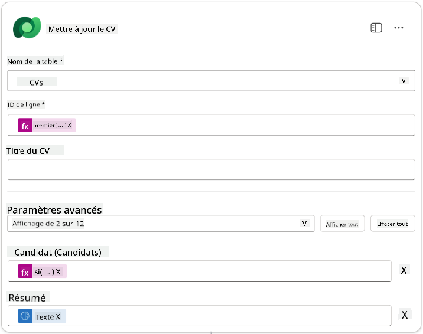
-
Sélectionnez le nœud Répondre à l'agent, puis utilisez + Ajouter une sortie pour configurer :
Type Nom Comment configurer Valeur Description Texte CandidateNameDonnées dynamiques (icône éclair) Résumer le CV → Voir plus → CandidateName Le [Nom du candidat] indiqué dans le CV Texte CandidateEmailDonnées dynamiques (icône éclair) Résumer le CV → Voir plus → Email L'[Email du candidat] indiqué dans le CV Texte CandidateNumberExpression (icône fx) concat('ppa_candidates/', if(equals(length(outputs('Get_Existing_Candidate')?['body/value']), 1), first(outputs('Get_Existing_Candidate')?['body/value'])?['ppa_candidateid'], outputs('Add_a_New_Candidate')?['body/ppa_candidateid']) )Le [Numéro du candidat] du nouveau ou existant candidat Texte ResumeSummaryDonnées dynamiques (icône éclair) Résumer le CV → Voir plus → body/responsev2/predictionOutput/structuredOutput Le résumé du CV et les détails au format JSON
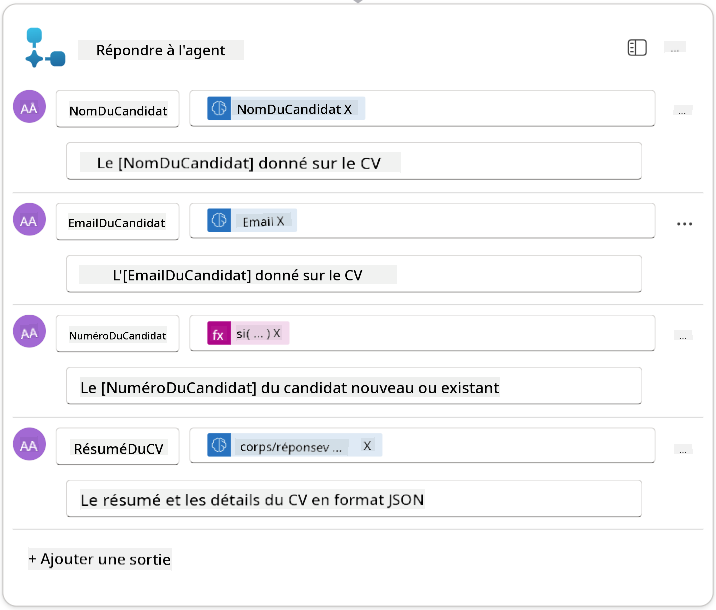
-
Sélectionnez Enregistrer le brouillon en haut à droite. Votre flux d'agent devrait ressembler à ceci :
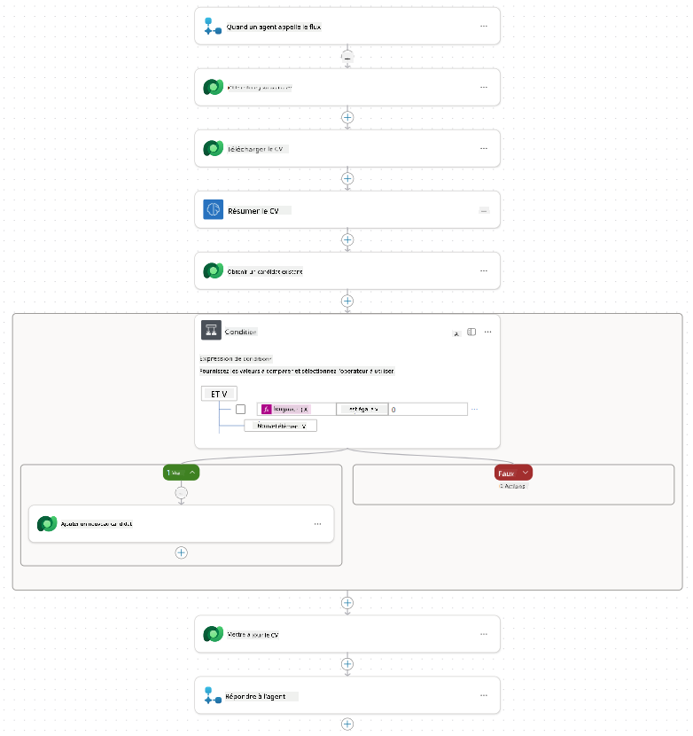
-
Sélectionnez l'onglet Aperçu, puis Modifier dans le panneau Détails.
- Nom du flux :
Summarize Resume -
Description :
- Nom du flux :
-
Sélectionnez Enregistrer.
-
Revenez à l'onglet Concepteur, puis sélectionnez Publier.
7.6 Connecter le flux à votre agent¶
Ajoutez maintenant le flux comme outil et configurez votre agent pour l'utiliser.
-
Ouvrez votre Agent de recrutement dans Copilot Studio.
-
Sélectionnez l'onglet Agents, puis ouvrez l'Agent de réception des candidatures.
-
Sélectionnez le panneau Outils, puis + Ajouter un outil -> Flux -> Summarize Resume (Agent Flow).
-
Sélectionnez Ajouter et configurer.
-
Configurez les paramètres de l'outil comme suit :
Paramètre Valeur Description Résumer un CV existant stocké dans Dataverse en utilisant un [Numéro de CV] comme entrée, retourner le [Numéro du candidat] et le résumé du CV au format JSON Quand cet outil peut être utilisé Seulement lorsqu'il est référencé par des sujets ou des agents -
Sélectionnez Enregistrer.
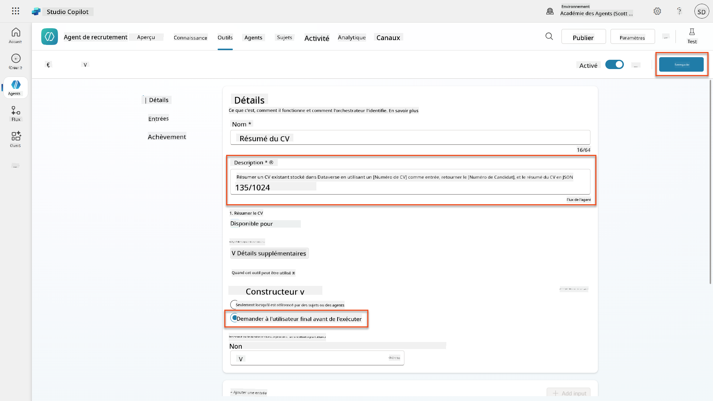
-
Si vous sélectionnez Outils dans l'Agent de recrutement, vous verrez maintenant que nos deux outils sont utilisables par l'Agent de réception des candidatures.
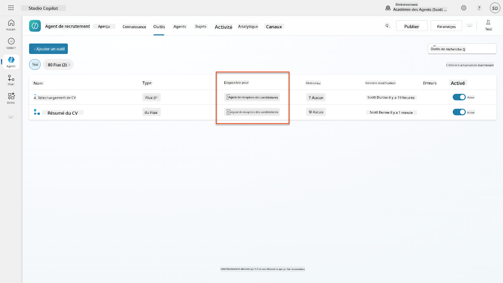
-
Accédez aux instructions de l'agent Application Intake Child, et modifiez l'étape Post-Upload comme suit :
2. Post-Upload Processing - After uploading, be sure to also output the [ResumeNumber] in all messages - Pass [ResumeNumber] to /Summarize Resume - Be sure to use the correct value that will start with the letter R. - Be sure to also output the [CandidateNumber] in all messages - Use the [ResumeSummary] to output a summary of the processed Resume and candidateRemplacez
/Summarize Resumeen insérant une référence au flux d'agent Résumer le CV en tapant une barre oblique (/) ou en sélectionnant/Summarizepour insérer la référence.
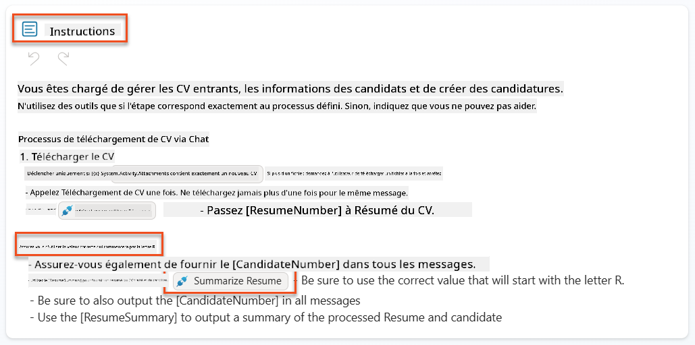
-
Sélectionnez Enregistrer.
7.7 Tester votre agent¶
Testez votre système multimodal complet pour vous assurer que tout fonctionne correctement.
-
Commencez les tests :
- Sélectionnez Tester pour ouvrir le panneau de test.
-
Tapez :
Voici un CV de candidat. -
Téléchargez l'un des CV d'exemple depuis Test Resumes.
-
Vérifiez les résultats :
- Une fois le message et le CV envoyés, vérifiez que vous recevez un Numéro de CV (format : R#####).
- Vérifiez que vous obtenez un Numéro de candidat et un résumé.
- Utilisez la carte d'activité pour voir à la fois l'outil de téléchargement de CV et l'outil Résumer le CV en action, et les sorties de l'invite de résumé reçues par l'agent :
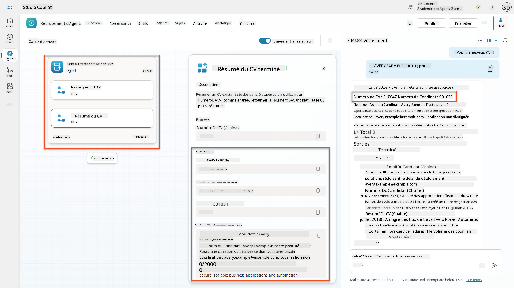
-
Vérifiez la persistance des données :
- Accédez à Power Apps.
- Ouvrez Apps → Hiring Hub → Jouer.
- Allez dans CVs pour vérifier que le CV a été téléchargé et traité. Il devrait contenir des informations résumées et un enregistrement de candidat associé.
- Vérifiez Candidats pour voir les informations extraites du candidat.
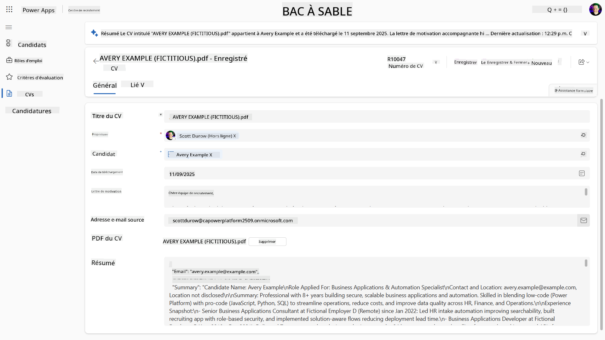
- Lorsque vous exécutez à nouveau le processus, il devrait utiliser le candidat existant (correspondant à l'email extrait du CV) au lieu d'en créer un nouveau.
Dépannage
- Le CV ne se traite pas : Assurez-vous que le fichier est un PDF et respecte les limites de taille.
- Aucun candidat créé : Vérifiez que l'email a été correctement extrait du CV.
- Erreurs de format JSON : Assurez-vous que les instructions de votre invite incluent la structure JSON exacte.
- Erreurs de flux : Vérifiez que toutes les connexions Dataverse et expressions sont correctement configurées.
Prêt pour la production¶
Bien que cela ne fasse pas partie de cette mission, pour rendre ce flux d'agent prêt pour la production, vous pourriez envisager les éléments suivants :
- Gestion des erreurs - Si le Numéro de CV n'a pas été trouvé ou si l'invite n'a pas réussi à analyser le document, une gestion des erreurs devrait être ajoutée pour retourner une erreur claire à l'agent.
- Mise à jour des candidats existants - Le candidat est trouvé en utilisant l'email, puis le nom pourrait être mis à jour pour correspondre à celui du CV.
- Séparation de la synthèse du CV et de la création du candidat - Cette fonctionnalité pourrait être divisée en flux d'agent plus petits pour les rendre plus faciles à maintenir, puis l'agent pourrait recevoir des instructions pour les utiliser successivement.
🎉 Mission accomplie¶
Excellent travail, Opératif ! Reconnaissance des CV documentés est maintenant terminée. Vous avez maîtrisé les invites multimodales et pouvez désormais extraire des données structurées de n'importe quel document avec précision.
Voici ce que vous avez accompli dans cette mission :
✅ Maîtrise des invites multimodales
Vous comprenez maintenant ce que sont les invites multimodales et quand utiliser différents modèles d'IA pour des résultats optimaux.
✅ Expertise en traitement de documents
Vous avez appris à configurer des invites avec des entrées d'image et de document, et à formater les sorties en JSON pour l'extraction de données structurées.
✅ Système d'extraction de CV
Vous avez construit un système complet d'extraction de CV qui traite les documents des candidats et s'intègre à votre flux de recrutement.
✅ Mise en œuvre des meilleures pratiques
Vous avez appliqué les meilleures pratiques pour l'ingénierie des invites avec analyse de documents et intégré des invites multimodales avec des flux d'agent.
✅ Base pour un traitement avancé
Vos capacités d'analyse de documents améliorées sont maintenant prêtes pour les fonctionnalités avancées de mise à jour des données que nous ajouterons dans les prochaines missions.
🚀 Prochaine étape : Dans la Mission 08, vous découvrirez comment améliorer vos invites avec des données en temps réel provenant de Dataverse, créant des solutions d'IA dynamiques qui s'adaptent aux exigences commerciales changeantes.
⏩ Passer à la Mission 08 : Invites améliorées avec Dataverse
📚 Ressources tactiques¶
📖 Ajouter des entrées texte, image ou document à votre invite
📖 Traiter les réponses avec une sortie JSON
📖 Sélection de modèle et réglages de température
📖 Utiliser votre invite dans Power Automate
📺 AI Builder : Sorties JSON dans le générateur d'invites
Avertissement :
Ce document a été traduit à l'aide du service de traduction automatique Co-op Translator. Bien que nous nous efforcions d'assurer l'exactitude, veuillez noter que les traductions automatisées peuvent contenir des erreurs ou des inexactitudes. Le document original dans sa langue d'origine doit être considéré comme la source faisant autorité. Pour des informations critiques, il est recommandé de recourir à une traduction humaine professionnelle. Nous ne sommes pas responsables des malentendus ou des interprétations erronées résultant de l'utilisation de cette traduction.